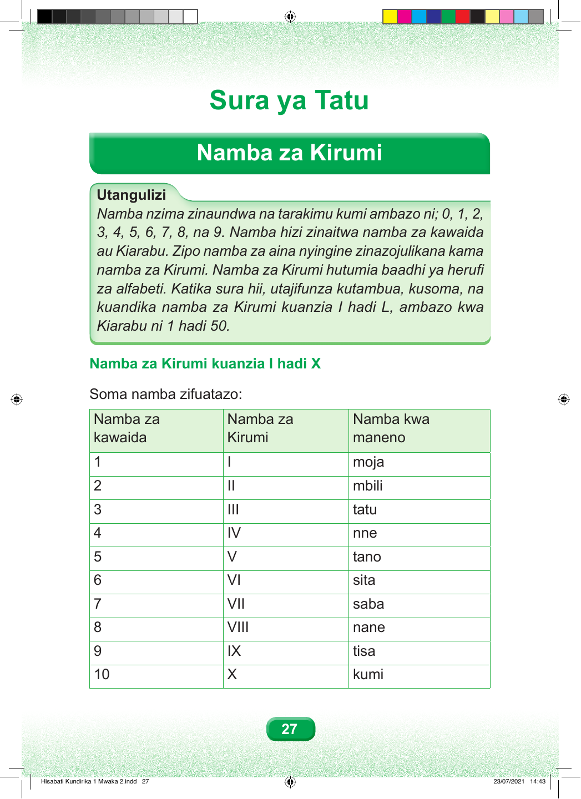

Sura ya Tatu Namba za Kirumi Utangulizi Namba nzima zinaundwa na tarakimu kumi ambazo ni; 0, 1, 2, 3, 4, 5, 6, 7, 8, na 9. Namba hizi zinaitwa namba za kawaida au Kiarabu. Zipo namba za aina nyingine zinazojulikana kama namba za Kirumi. Namba za Kirumi hutumia baadhi ya herufi za alfabeti. Katika sura hii, utajifunza kutambua, kusoma, na kuandika namba za Kirumi kuanzia I hadi L, ambazo kwa Kiarabu ni 1 hadi 50. Namba za Kirumi kuanzia I hadi X Soma namba zifuatazo: Namba za Namba za Namba kwa kawaida Kirumi maneno 1 I moja 2 II mbili 3 III tatu 4 IV nne 5 V tano 6 VI sita 7 VII saba 8 VIII nane 9 IX tisa 10 X kumi 27 Hisabati Kundirika 1 Mwaka 2.indd 27 23/07/2021 14:43